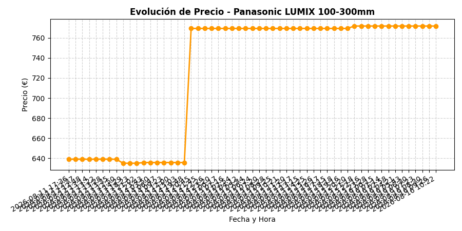

Evolución Histórica

La gráfica y los datos se actualizan de forma completamente automática todos los días.
Monitoreo automático diario desde Amazon España

La gráfica y los datos se actualizan de forma completamente automática todos los días.